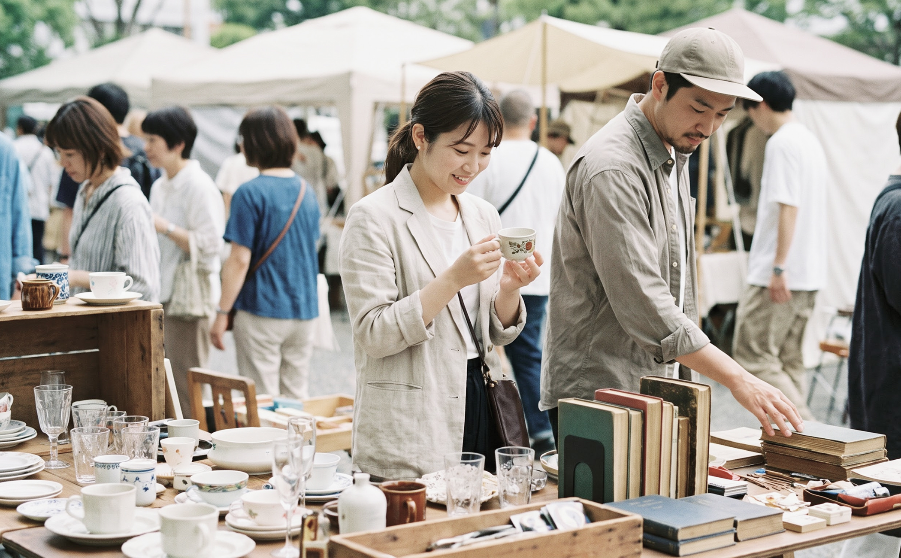

OBJECT / KEYPO PICK
매일 쓰는 것들이, 결국 취향이 된다.
OBJECT / KEYPO PICK
매일 쓰는 것들이, 결국 취향이 된다.
시간이 지날수록
좋아지는 것들.
우리는 매일 수많은 것들을 고르고, 쓰고, 곁에 둡니다.
그중에는 시간이 지나도 계속 좋아지는 것들이 있습니다.
KEYPO가 그 일상의 장면을 기록합니다.
이번 호에서 다루는 것
OBJECT · HABIT · PEOPLE
오래 쓰는 물건 / 작은 관리 습관 /
물건을 잘 다루는 사람들의 이야기
EDITOR’S PICK
에디터가 오래 들여다보고 싶었던, 조금 더 궁금한 이야기들
FEATURE STORY
트렌드를 하나의 현상으로만 보지 않고, 사람들이 물건을 고르는 방식이 어떻게 달라지고 있는지 들여다봅니다.

새로 사는 것보다,
잘 고르는 재미
중고부터 빈티지, 리퍼브까지.
이미 존재하는 물건을 다시 선택하는 사람들이
늘고 있는 이유를 따라가 봅니다.
이번 이야기
① 중고 거래의 변화
② 리퍼브와 빈티지의 재발견
③ 다시 고르는 소비의 기준
새것과 다른 가치가 생기고 있습니다.
지금의 소비가 어떻게 달라지고 있는지 살펴봅니다.
MORE TO READ
조금 더 들여다보고 싶은 일상의 장면들
KEYPO PICK
새로운 이야기를 만나보세요.
취향과 공간, 사람과 작은 즐거움까지 KEYPO가 들여다본 생활의 장면을 전합니다.